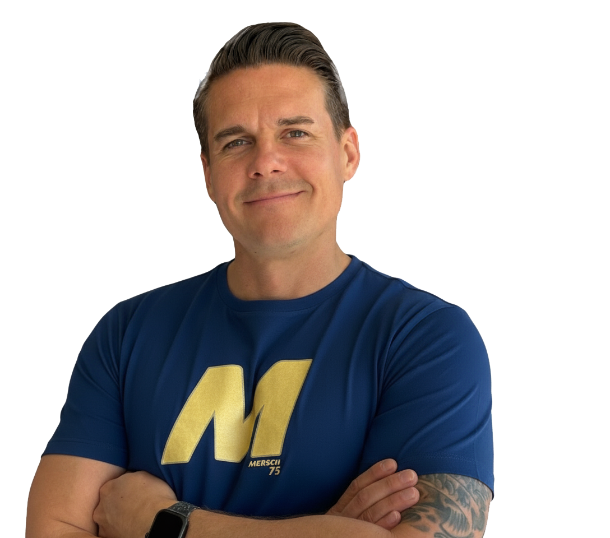
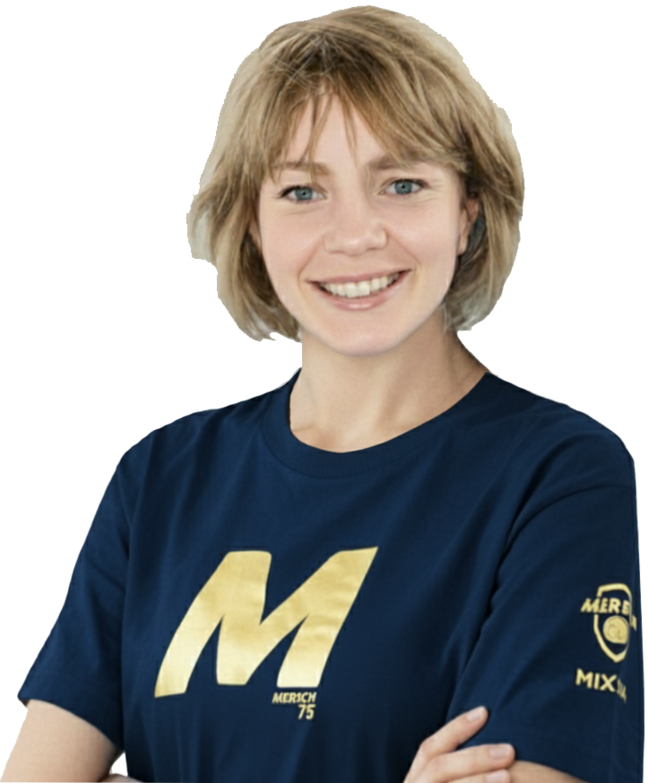
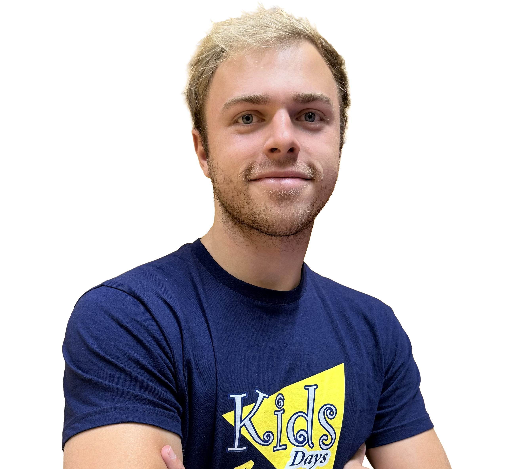
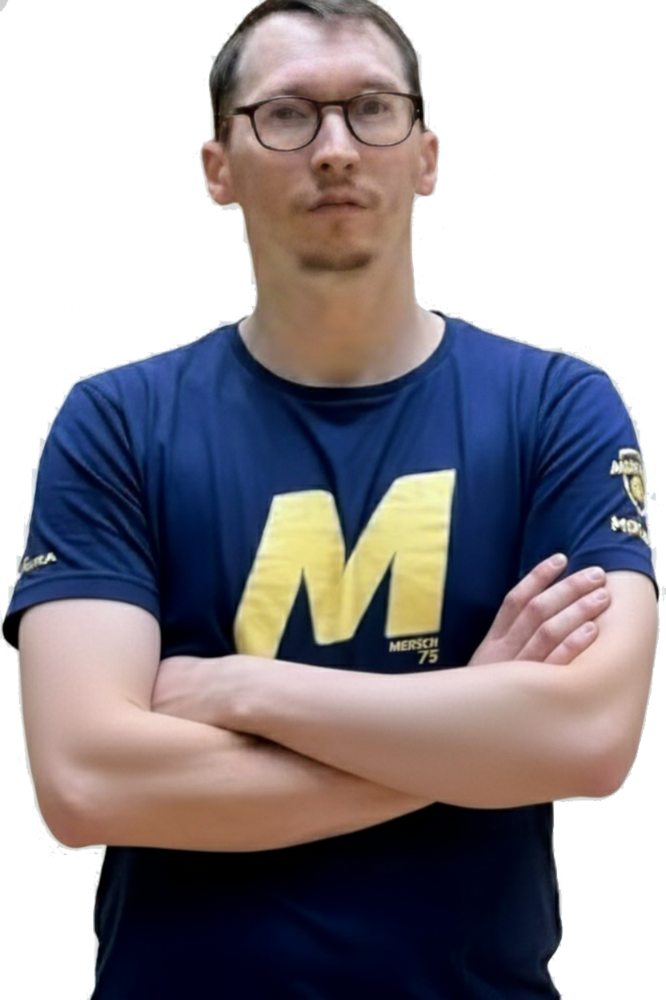
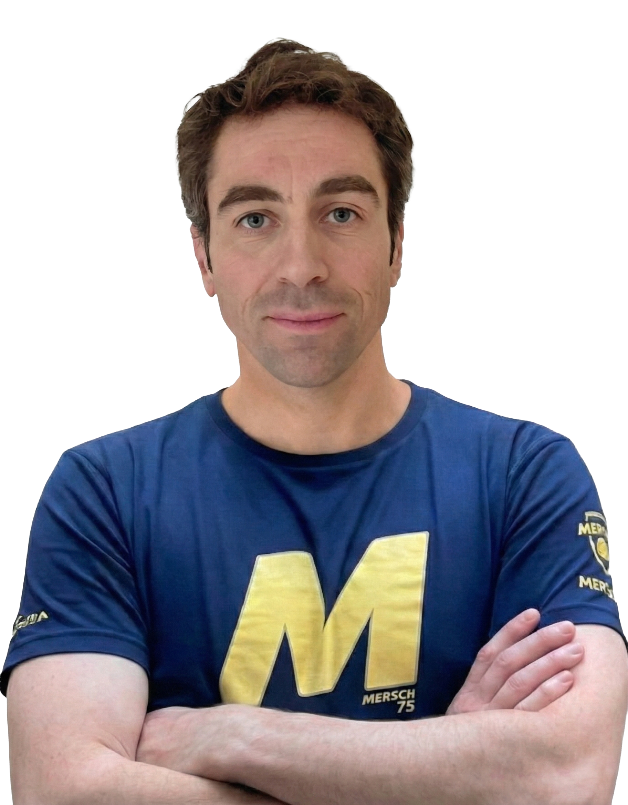
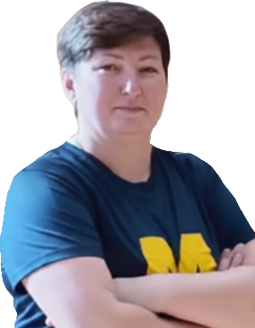

Koordinatioun
Max Blanc (LUXQF3)
Jugendkoordinator & Trainer U4-U15
De Max Blanc (LUXQF3) ass eisen neie Jugendkoordinator - e frësche Wand a voller Dynamik. Mat vill Passioun an Engagement bréngt hien nei Iddien a frëschen Elan an eis Jugendaarbecht. Seng villjäreg Erfarung als Jugendtrainer an Däitschland huet him de Bléck fir Talent, d'Féierungskompetenz an d'Pedagogik geschäerft, déi eise jonke Spiller enorm zougutt komme wäert. Fir d'Equippen ass hie net nëmmen Trainer, mee och Inspiratiounsquell an Motivator, dee jiddereen zu sengem Beschte bréngt.

Jugend
Anne Holm-Bisenius (LUXQF3)
Trainerin U7 & Filles
D'Anne Holm-Bisenius (LUXQF3) ass eng richteg Kraaftquell am Veräin. Als Mamm vu dräi begeeschterte Spillerinnen a Spiller lieft si de Sport och selwer aktiv um Terrain bei de Fraen aus. Gläichzäiteg formt si als Trainerin am Jugendberäich de Sportlern vun muer an iwwerhëlt mat vill Verantwortungsgefill eng wichteg Roll am Gemengerot zu Lëntgen. Trotz engem voll gepackte Kalenner meeschtert si mat Leidenschaft, Organisationstalent an engem onermiddleche Wëllen och nach hire Beruff - ëmmer mat dem Zil, Gemeinschaft a Sport mateneen ze verbannen.

Jugend
Louis Van der Weken (LUXQF2Bis)
Trainer U9
De Louis Van der Weken (LUXQF2Bis) ass mat senger onermiddlecher Energie a senger Leidenschaft fir de Sport dem Max an enger duebeler Roll als Trainer a Comitésmember zur Säit. Hien ass net nëmmen en Handballer duerch an duerch, mee bréngt och aus sengem Erfolleg als Billiardspiller ee staarkt Gefill fir Taktik, Präzisioun a Kampfgeescht mat. Als Brudder vu Patrizia kennt hien de Wäert vu Zesummenhalt an Teamspirit, an hie weess ganz genee, wéi ee jonk Spiller begeeschtert, motivéiert a matreißt. Fir d'Jugend ass hie gläichzäiteg Virbild, Motivator an Inspiratioun.

Senioren
Laurent Metzler
Trainer Hären S1 / S2 / U21-U17
Vu klengem u steet de Laurent Metzler mam Häerz a mat vill Passioun um Handballsterrain. Säin Talent a seng Leeschtungen hunn hien zu engem vun de beschte Jugendspiller an eisem Veräi gemaach. No enger kuerzer Etapp am Museldall virun dräi Saisonen ass hien op Miersch zréckkomm - ëmmer a voller Verbindung mam Club. Säin grousst Zil, d'Éischt Härenekipp z'iwwerhuelen, huet hien ni aus den Ae verluer. Mat sengem fachleche Wëssen, sengem Engagement a senger ongebrachener Begeeschterung wäert hien eiser Ekipp wichteg Impulser ginn an dozou bäidroen, datt mir eis permanent weiderentwéckelen.

Fréi Start
Grégory Redavid
Trainer U4
De Grégory Redavid lieft an ootemt Handball. Mat senger laangjäreger Erfarung um Terrain an engem groussen Häerz fir de Sport ass hie fir vill am Veräin e richtegt Virbild. Als engagéierte Papp huet hie säi klenge Jong mat senger Begeeschterung ugestach an domat d'Basis fir déi nächst Handball-Generatioun geluecht. Seng Léift fir de Sport a säin natierlecht Talent am Ëmgang mat Kanner hunn et him erméiglecht, mat vill Freed an Elan d'Roll als Trainer vun eise Klengsten z'iwwerhuelen - ëmmer mam Zil, Spaass, Fairplay an Teamgeescht weiderzeginn.

Fraen
Katarzyna Pietrasik
Trainerin Fraen & Filles
D'Katarzyna Pietrasik huet hir sportlech Wuerzelen am Fussball a kënnt ursprénglech aus Polen. Wéi de Fraefussball zu Lëtzebuerg nach ganz am Ufank stoung, huet hire Mann - selwer Handballspiller - hir d'Dier zu engem neie Sport opgemaach: dem Handball. Iwwer d'Vereensstatiounen zu Miersch an zu Dikrech huet si net nëmmen vill Erfarung a Spillverständnis gesammelt, mee och eng grouss Passioun fir de Sport entwéckelt. Haut setzt si dës Erfarung mat vill Engagement fir eis Fraenequipe an, a vermëttelt d'Freed um Handball och un déi Jugendlech, déi vun hirem Wëssen a Motivatioun profitéiert.

Fréi Start
Marc Jungels
Trainer U4
De Marc Jungels ass dat bescht Beispill dofir, datt Engagement méi wichteg ass wéi Erfahrung. Och wann hie selwer kee groussen Handballhannergrond huet, huet hie kee Moment gezéckt, wéi et drëms goung, dem Grégory spontan ënner d'Äerm ze gräifen. Als motivéierte Papp bréngt hien sech mat vill Humor, Gedold a gudder Laun bei eise Klengsten an - och wann et net ëmmer einfach ass, déi wibbeleg Butzen an der Gitt ze halen. Mat senger Oppenheet an senger Bereetschaft unzepaken ass hie séier zu engem wichtegen Deel vum Trainerteam ginn.
Fréi Start
Christophe Kremer
Trainer U4
Den Christophe Kremer bréngt vill Joeren Handballerfarung an eng ongebremst Leidenschaft fir de Sport mat. Um Terrain war säin Asaz ëmmer 100 Prozent - egal ob am Match oder am Training. Dës Energie a Freed um Spill vermëttelt hien och mat vill Geschéck un eis U4-Equip. Mat senger natierlecher Begeeschterung, senger Gedold an engem gewënnende Laachen suergt hien dofir, datt d'Kanner mat Spaass a Stolz op de Ball lassgoen an sech ëmmer op déi nächst Stonn mat him freeën.
Jugend
Elie Schuster
Trainer U11
Den Elie Schuster, Fils vun eisem Präsident Jeff, ass mat Häerz a Séil am Handball doheem. Als begeeschterte Goalkeeper, Kreesspiller an engagéierte Jugendarbitter weist hien net nëmmen um Terrain säi Kampfgeescht, mee och d'Fäegkeet, Verantwortung ze iwwerhuelen. Ausserdeem beweist hie bei den Theaterfrënn zu Kënzeg, datt hien sech och ausserhalb vum Sport mat vill Passioun a Kreativitéit abréngt. Mat senger Energie a sengem Wëlle säi Wëssen un d'Jugend weiderzeginn, ass hien eng wichteg Stäip fir déi nächst Generatioun Handballer.
Erweidert Staff
Weider Traineren & Supervisors
Mathis Derneden (U13/U15)
Castellano Virginio (LUXQF2)
Adrien Deischter (LUXQF4)